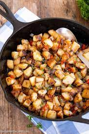

Country Potatoes
A good ol' Southern Dish full of love, warmth, and carbs! Learn how to make this delicious breakfast or lunch meal with just a couple of vegetables and time!
Ingredients
- Russet Potatoes
- Yellow Onion
- Variety of Bell Peppers
- Vegetable Oil
- Salt and Pepper
- Garlic Powder
- Thyme
- Chives
- Optional: Cheese and/or Bacon
Instructions
- Add 1/4 cup of oil to your skillet and heat over medium heat.
- Add 2lbs of diced potatoes, 1 cup of onions, and 1/2 cup (each) of your bell peppers into the skillet. Add the salt, black pepper, and garlic powder to your liking. Toss to evenly coat.
- Once coated evenly, cover the skillet tightly and let cook for 10 minutes.
- Afterwards, remove the lid and toss it around more. Add your cooked bacon and/or cheese at this point. Continue to cook for 10-12 minutes.
- Stir until potatoes are golden-brown and fork tender. Sprinkle in your chopped thyme and chives.
- Congrats! You made yourself a good skillet of country potatoes! Enjoy on its own or as a side dish!
Return to Home
Return to Top